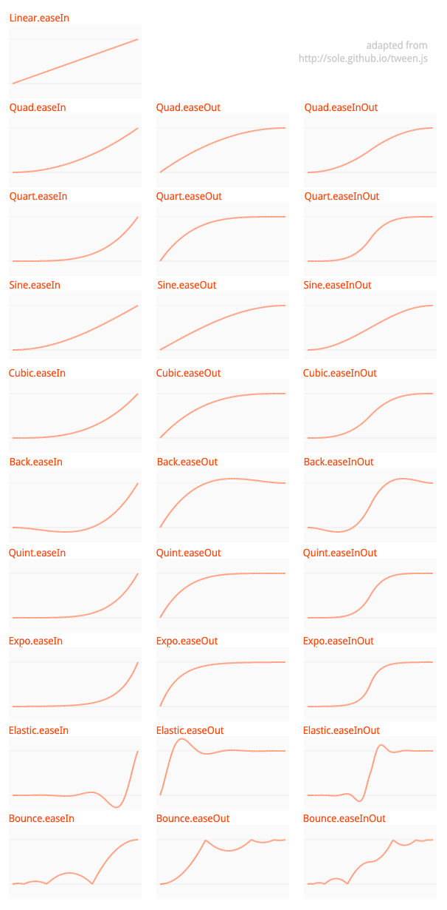

Back to feature guide
View all guides
Tweening with Actuate
Actuate is a motion library created by Joshua Granick.
It is built into luxe and accessible as luxe.tween.Actuate.
What is tweening?
Tweening is a shortened version of inbetweening, used commonly in digital animation.
It, in simple terms, is about moving from a start value to an end value (keyframes). This is especially useful in games where things should move smoothly, transition and generally animate over time.
Examples
Slide the menu in from the top, over 2 seconds
//assume that y was -menu.height (off screen)
Actuate.tween( menu, 2, { y:10 } );
Fade in this overlay over half a second
//assume that alpha is 0 already
Actuate.tween( overlay.color, 0.5, { a:1 } );
Fade this enemy quickly to half opaque, then wait 1 second, then fade out slowly
//Take the tween that Acutate returns, and
// call .onComplete on it with a function
Actuate.tween( enemy.color, 0.2, { a:0.5 } )
.onComplete(function(){
//Now that the first tween is done, start a second one,
//but by using the tween .delay function we can wait
Actuate.tween( enemy.color, 3, { a:0 } ).delay( 1 );
}); //onComplete
Fade up, over and over, starting from 0
//the value of flashing.color.a should be 0 at first
//then we fade to 1, and say "repeat that"
Actuate.tween(flashing.color, 0.5, { a:1 }).repeat();
Fade up and down continuously
//Similar to repeat, you can ping pong the value using reflect
//If flashing.color.a is 0,
//it will go up to 1, and then animate to 0 on a loop
Actuate.tween(flashing.color, 0.5, { a:1 }).repeat().reflect();
Callback functions on the created motion
Like the onComplete function above, there are other callbacks you can ask for :
//Remember, these can be chained like above and function handlers can be a local class member
//or any previously declared function - or an inline function like the above example.
//Called when the motion has completed
.onComplete( handler:Dynamic, parameters:Array<Dynamic> = null )
//When a .repeat() is requested, you will get an onRepeat instead of onComplete
.onRepeat( handler:Dynamic, parameters:Array<Dynamic> = null )
//Every time the value changes in the animation/motion, your callback will fire
.onUpdate( handler:Dynamic, parameters:Array<Dynamic> = null )
Helper functions on the created motion
//If you want float values during motion should be automatically rounded to
.snapping( enabled:Bool = true )
//If you want the motion to be performed in reverse
.reverse( enabled:Bool = true )
//If you want the motion to repeat
.repeat( enabled:Bool = true )
//If you want to motion to reverse the tween on repeat
//this requires .repeat() to be enabled!
.reflect( enabled:Bool = true )
//Helper functions to set tween properties
//the curve function to use (curves displayed below)
.ease( luxe.tween.easing.* )
//the amount of time to wait in seconds, before doing the tween
.delay( duration:Bool )
The different types of easing
These easing values are accessed via luxe.tween.easing.*
Each type has one or more variations, such as easeIn, easeOut or easeInOut listed below.
This means that the curve is applied at the beginning (ease in) at the end (ease out) or both over the time period.
//example usage, this will bounce "at the end" of the animation
Actuate.tween( menu, 2, { y:10 } ).ease( luxe.tween.easing.Bounce.easeOut );
The following curve type has only one option (because it is linear!)
- Linear
easeNone
The following curves have easeIn, easeOut, easeInOut
- Back
- Bounce
- Cubic
- Elastic
- Expo
- Quad
- Quart
- Quint
- Sine
Visual Curves
This is how these curves look when drawn as graphs.

Back to feature guide
View all guides